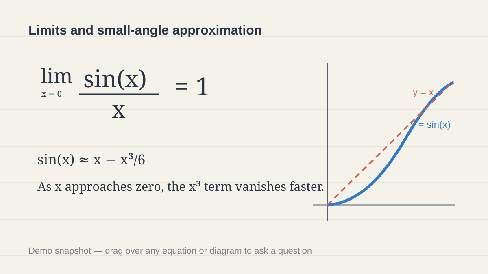

LectureLens
Live captions, in your language.
Lecture is spoken in
English (US)
Spanish
French
Chinese (Mandarin)
Hindi
Korean
Japanese
German
Portuguese
Arabic
Show translation in
None (captions only)
Spanish
French
Chinese
Hindi
Korean
Japanese
German
Portuguese
Arabic
English
Start listening
Stop
I missed that
idle
Live captions
Translation
Visual context
Select a board region and ask
Demo snapshot

Drag over the equation or diagram you want to ask about.
Clear selection
Your question
Answer in
English
Spanish
French
Chinese
Hindi
Korean
Japanese
German
Portuguese
Arabic
Ask about selection
You missed:
Close